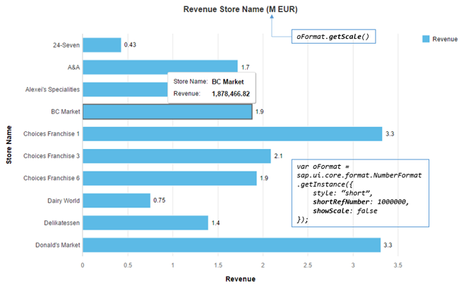

NumberFormat uses the parameters defined for the current locale. These
parameters can be overwritten on each instance by setting the format options.
There are four types of formatters defined in NumberFormat:
Integer formatter: formats and parses only the integer digits; decimal digits are ignored
Float formatter: formats and parses both integer and decimal digits.
Percent formatter: formats the number into a string with percentage sign. It validates the number whether it contains the right percentage sign in its parser.
Currency formatter: formats the number by using the parameters defined for the given currency code. Either currency symbol, currency code, or none of both can be included in the final formatted string. It parses the given string into an array which contains both the currency number and currency code.
The instantiation of sap.ui.core.format.NumberFormat is done by calling getter defined on
NumberFormat (and not by using the
constructor).
// "NumberFormat" required from module "sap/ui/core/format/NumberFormat" var oIntegerFormat = NumberFormat.getIntegerInstance(); var oFloatFormat = NumberFormat.getFloatInstance(); var oPercentFormat = NumberFormat.getPercentInstance(); var oCurrencyFormat = NumberFormat.getCurrencyInstance();
All parameters have their default value defined in the current locale. Therefore, if no parameter is
given when instantiating the formatter instance, it fetches the parameters from the current locale. The samples here assume that the
current locale is en-US.
All parameters can be overwritten by giving a format option object in the
getter of the formatter. There are a bunch of parameter defined for the four types of formatters. Most of them
are shared among the types, and the rest are specifically defined for a certain kind of formatter.
minIntegerDigits: minimal number of non-fraction digits. If there are less integer digits in the number
than the value here, '0'(s) is prepended in the final result.
maxIntegerDigits: maximal number of non-fraction digits. If there are more digits in the number than the
value here, all integer digits in the final result are replace by ?.
minFractionDigits: minimal number of fraction digits. If there are less decimal digits in the number than
the value here, '0'(s) is appended in the final result.
maxFractionDigits: maximal number of fraction digits. If there are more decimal digits in the number than
the value here, those digits are discarded from the result and the least significant digit is calculated by using the
given roundingMode parameter.
decimals: number of decimal digits in the final result. Same result is achieved by setting both
minFractionDigits and maxFractionDigits to this value.
precision: number of digits used to display the number, for example with precision 5 a number could be
1.3456 or 134.45.
shortDecimals: number of decimal digits in the shortifed number when parameter style is
set to short or long. If this isn't set, the parameter decimal is used
instead.
var oFormatOptions = {
minIntegerDigits: 3,
maxIntegerDigits: 5,
minFractionDigits: 2,
maxFractionDigits: 4
};
// "NumberFormat" required from module "sap/ui/core/format/NumberFormat"
var oFloatFormat = NumberFormat.getFloatInstance(oFormatOptions);
oFloatFormat.format(1.1); // returns 001.10
oFloatFormat.format(1234.567); // returns 1,234.567
oFloatFormat.format(123456.56789); // returns ??,???.5679var oFormatOptions = {
style: "short",
decimals: 1,
shortDecimals: 2
};
// "NumberFormat" required from module "sap/ui/core/format/NumberFormat"
var oFloatFormat = NumberFormat.getFloatInstance(oFormatOptions);
oFloatFormat.format(1234.56); // returns 1.23K (shortified number takes the shortDecimals parameter)
oFloatFormat.format(123.456); // returns 123.5 (non-shortified number takes the decimals parameter)groupingEnabled defines whether the integer digits are put into groups which are separated by the
groupingSeparator parameter
groupingType defines the type of grouping. Either Arabic or Indian can
be set here.
groupingSeparator defines the separator of grouping.
decimalSeparator defines the symbol of decimal point.
groupingSize only used if you don't want the locale-dependent grouping, for example 3 digits for de or
en
groupingBaseSize only used if your locale uses a specific group size for the first group (like Indian),
and you don't want to use the standard
plusSign
minusSign
You can use compact format to format a number using a given scale. For example, 1000000 may be formatted under en-US locale as 1 Million.
To format a number in compact format, set the option style to either short or
long. These styles control which version of scale name is used. For example, 1000000 is formatted as
1M with short and 1 Million with long.
The scale can be selected automatically based on the given number, or you can set it explicitely by using
shortRefNumber. You can set this option with a number which is then used for calculating the scaling factor
for formatting all given numbers to this formatter.
To hide the scaling formatter from the formatted number and only be shown once on the screen, you can use option
showScale. In order to get the scaling factor name of the number set to shortRefNumber under
the current running locale, you use method getScale.
To control the start the starting point of numbers which should be displyed in compact format, you use
shortLimit.
In the following chart, all numbers both on the chart and axis should be formatted using the same scaling factor. The scaling
factor should only appear in the chart title and be hidden from the formatted number. In order to achieve this, the option
shortRefNumber is set to 1000000 and showScale is set to
false. The corresponding scaling factor name is returned by calling the getScale
method.

emptyString defines what empty string ("") is parsed as and what is formatted as
emptyString. The allowed values are only NaN, null or
0. Default setting is NaN.
pattern: a pattern which follows the CLDR syntax. The number is then formatted according to the given
pattern.
roundingMode: defines a rounding behavior for discarding the digits after the maximum decimal digits
defined by maxFractionDigits or decimals. Rounding will only be applied, if the
formatting value is of type number.
|
Number |
|
|
|
|
|
|
|
|
|---|---|---|---|---|---|---|---|---|
|
2.21 |
2.2 |
2.3 |
2.2 |
2.3 |
2.2 |
2.2 |
2.2 |
2.2 |
|
2.25 |
2.2 |
2.3 |
2.2 |
2.3 |
2.2 |
2.3 |
2.2 |
2.3 |
|
2.29 |
2.2 |
2.3 |
2.2 |
2.3 |
2.3. |
2.3 |
2.3 |
2.3 |
|
-2.21 |
-2.3 |
-2.2 |
-2.2 |
-2.2 |
-2.2 |
-2.2 |
-2.2 |
-2.2 |
|
-2.25 |
-2.3 |
-2.2 |
-2.2 |
-2.3 |
-2.3 |
-2.2 |
-2.2 |
-2.3 |
|
-2.29 |
-2.3 |
-2.2 |
-2.2 |
-2.3 |
-2.3 |
-2.3 |
-2.3 |
-2.3 |
A formatted number which contains a locale-dependent grouping separator, decimal point, or percentage sign can be parsed into a number
object using sap.ui.core.format.NumberFormat. Those number string may not be correctly parsed by using
parseInt or parseFloat in JavaScript.
// "NumberFormat" required from module "sap/ui/core/format/NumberFormat"
var oFloatFormat = NumberFormat.getFloatInstance();
oFloatFormat.parse("1,234.567"); // returns 1234.567
oFloatFormat.parse("12.34%"); // returns 0.1234